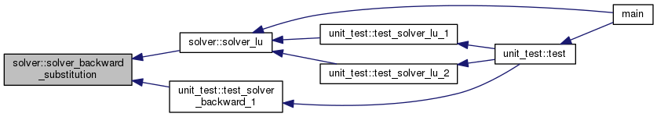
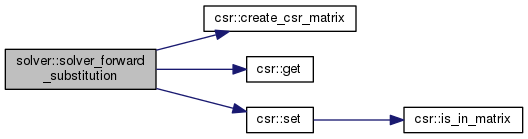
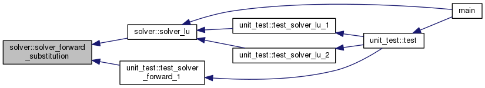
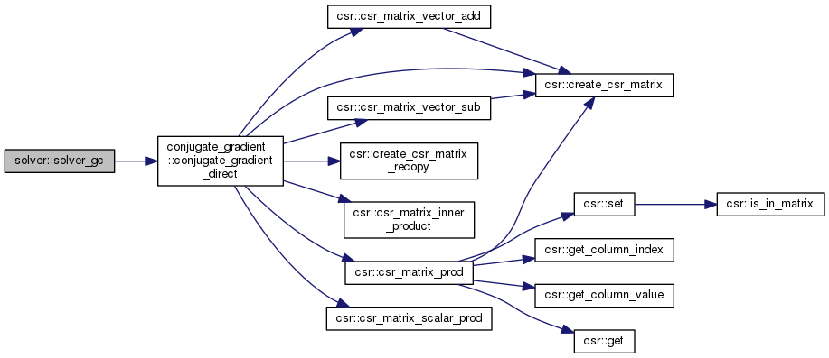
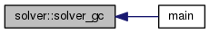
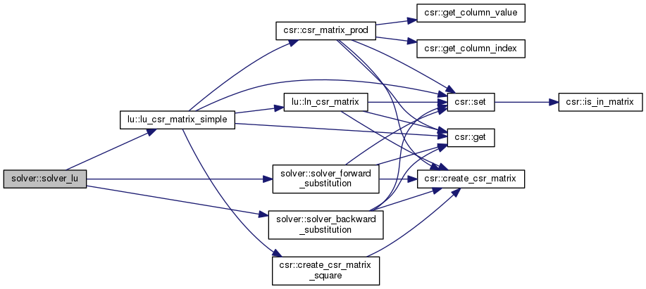
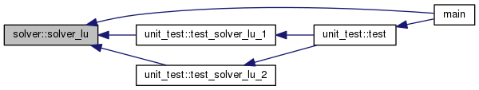

Ce module permet de résoudre des systèmes linéaires en utilisant soit la décomposition LU, soit la méthode du gradient conjugué. Plus de détails...
Fonctions/Subroutines | |
| type(csr_matrix) function | solver_lu (A, B) |
Résouds le système  en utilisant la décomposition LU de A. Plus de détails... en utilisant la décomposition LU de A. Plus de détails... | |
| type(csr_matrix) function | solver_gc (A, B, eps) |
| Résouds le système en utilisant la méthode du gradiant conjugué Plus de détails... | |
| type(csr_matrix) function | solver_forward_substitution (L, B) |
| Résouds le système un utilisant la méthode substitution. Plus de détails... | |
| type(csr_matrix) function | solver_backward_substitution (L, B) |
| Résouds le système un utilisant la méthode substitution inversée. Plus de détails... | |
Description détaillée
Ce module permet de résoudre des systèmes linéaires en utilisant soit la décomposition LU, soit la méthode du gradient conjugué.
Documentation de la fonction/subroutine
◆ solver_backward_substitution()
| type(csr_matrix) function solver::solver_backward_substitution | ( | type(csr_matrix), intent(in) | L, |
| type(csr_matrix), intent(in) | B | ||
| ) |
Résouds le système un utilisant la méthode substitution inversée.
- Paramètres
-
L Matrice CSR triangulaire supérieur B Matrice CSR représentant un vecteur colonne
- Renvoie
- Solution du système
Voici le graphe d'appel pour cette fonction :
Voici le graphe des appelants de cette fonction :

◆ solver_forward_substitution()
| type(csr_matrix) function solver::solver_forward_substitution | ( | type(csr_matrix), intent(in) | L, |
| type(csr_matrix), intent(in) | B | ||
| ) |
Résouds le système un utilisant la méthode substitution.
- Paramètres
-
L Matrice CSR triangulaire inférieur B Matrice CSR représentant un vecteur colonne
- Renvoie
- Solution du système
Voici le graphe d'appel pour cette fonction :

Voici le graphe des appelants de cette fonction :

◆ solver_gc()
| type(csr_matrix) function solver::solver_gc | ( | type(csr_matrix), intent(in) | A, |
| type(csr_matrix), intent(in) | B, | ||
| real, intent(in), optional | eps | ||
| ) |
Résouds le système en utilisant la méthode du gradiant conjugué
- Paramètres
-
A Matrice CSR B Matrice CSR représentant un vecteur colonne eps Précison requise (Optionel)
- Renvoie
- Approximation, dans le pire des cas, de la solution du système
Voici le graphe d'appel pour cette fonction :

Voici le graphe des appelants de cette fonction :

◆ solver_lu()
| type(csr_matrix) function solver::solver_lu | ( | type(csr_matrix), intent(in) | A, |
| type(csr_matrix), intent(in) | B | ||
| ) |
Résouds le système en utilisant la décomposition LU de A.
- Paramètres
-
A Matrice CSR B Matrice CSR représentant un vecteur colonne
- Renvoie
- Approximation, dans le pire des cas de la solution du système
Voici le graphe d'appel pour cette fonction :

Voici le graphe des appelants de cette fonction :
